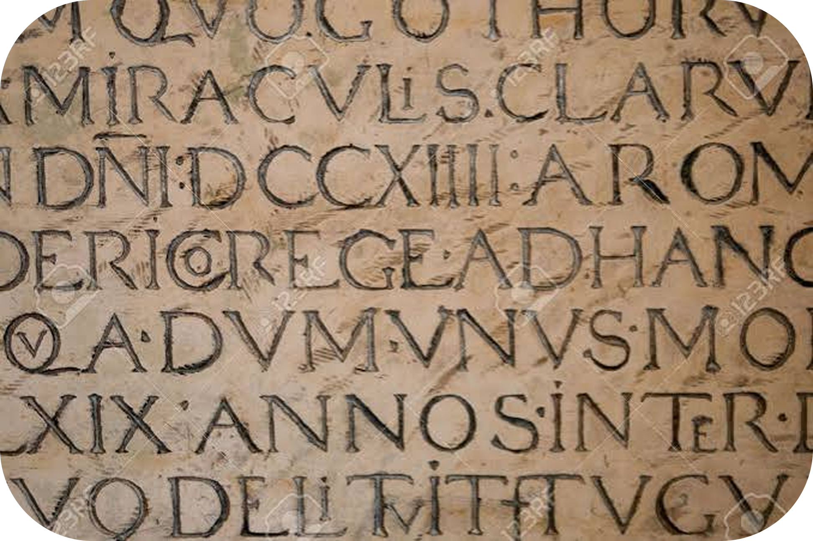
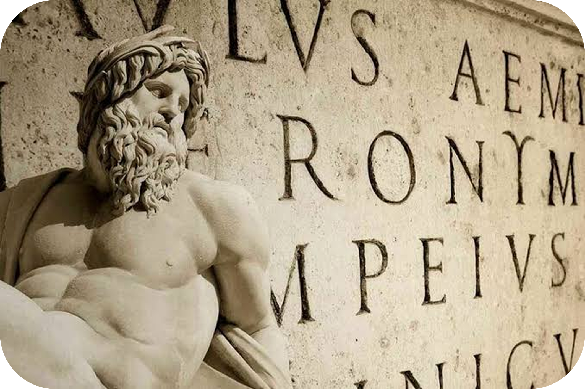

Descubra a Escrita:
Latina
- Península Italíca, 700 a.C
A escrita do latim antigo é fascinante porque mostra o início de uma das línguas mais importantes da história. No começo, por volta do século VII a.C., os registros eram feitos em pedra, metal e argila, usando um alfabeto adaptado dos etruscos e dos gregos. Nessa época inicial, as letras eram bem rígidas e o sentido da escrita mudava muito, podendo ser da direita para a esquerda ou alternando a direção a cada linha. Como não existiam espaços entre as palavras e nem sinais de pontuação, as

mensagens eram blocos contínuos de texto. Essas primeiras inscrições apareciam em objetos do dia a dia e monumentos, servindo como registros práticos de uma Roma que ainda estava crescendo.

Com o tempo e a expansão de Roma, a escrita passou por uma grande evolução e ficou mais organizada. Surgiram as letras capitais, que eram aquelas maiúsculas simétricas e imponentes gravadas nos grandes monumentos públicos, que acabaram inspirando o nosso alfabeto atual. Já para a vida cotidiana, como fazer contas, rascunhos e escrever cartas, os romanos usavam a escrita cursiva em tábuas de cera e papiros, que era muito mais rápida e
prática. Essa combinação entre um estilo formal para os monumentos e outro ágil para o dia a dia ajudou a organizar o império e deixou a base gráfica que usamos até hoje.